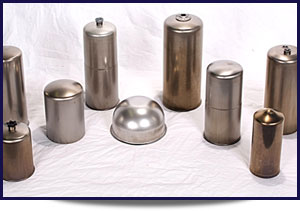
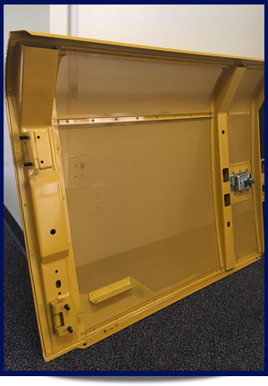

Product Offerings
Joel Perkins
Account Manager
SSP - Scotland Manufacturing
Deep Drawn Stampings - Filtration
We can fabricate deep drawn shells, from 2-5/8" to 5" diameter and up to 12" tall in a variety of gauges, used in the production of oil and fuel filters for diesel engine applications ranging from on-highway trucks to off-highway tractors and earth-moving and mining equipment. Scotland Manufacturing's expertise in cold rolled steel technology allows us to offer customers a lower cost option vs. tin plate steel. Our deep drawn filter shells can meet the tough standards required by the heavy-duty market.
Industry Trends
 Scotland Manufacturing is able to offer both production style manual welding (MIG) as well as spot welding. Our capabilities include producing class "A" surface weldments used in the heavy construction market. As part of that weldment, we take multiple parts and use precision weld fixtures to meet very challenging and exacting customer requirements. In fact, using the weld fixtures, we produce 30 parts within a span of 1400 millimeters while holding a tolerance within .2 mm.In addition, we have a full service finishing department capable of producing "A" class surfaces prior to painting.
So, if you have a project that requires not only stamped parts, but also weldments and finishing, look no further than Scotland Manufacturing.